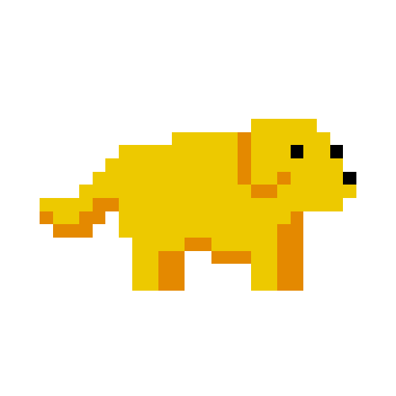

Red
Orange
Yellow
Green
Blue
Indigo
Violet
According to all known laws of aviation,
there is no way a bee should be able to fly.
Its wings are too small to get its fat little body off the ground.
The bee, of course, flies anyway
because bees don't care what humans think is impossible.
